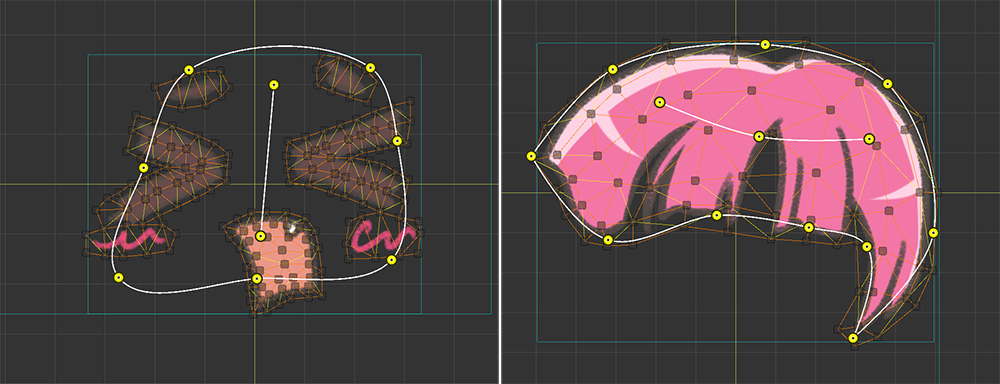
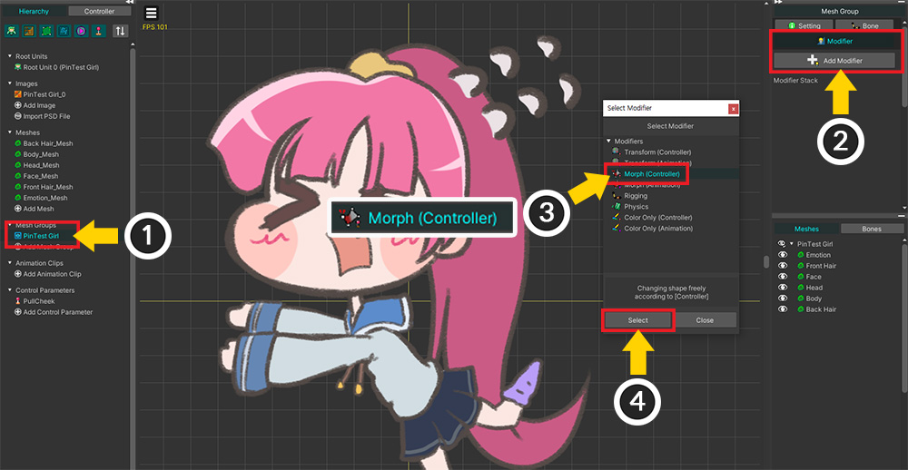
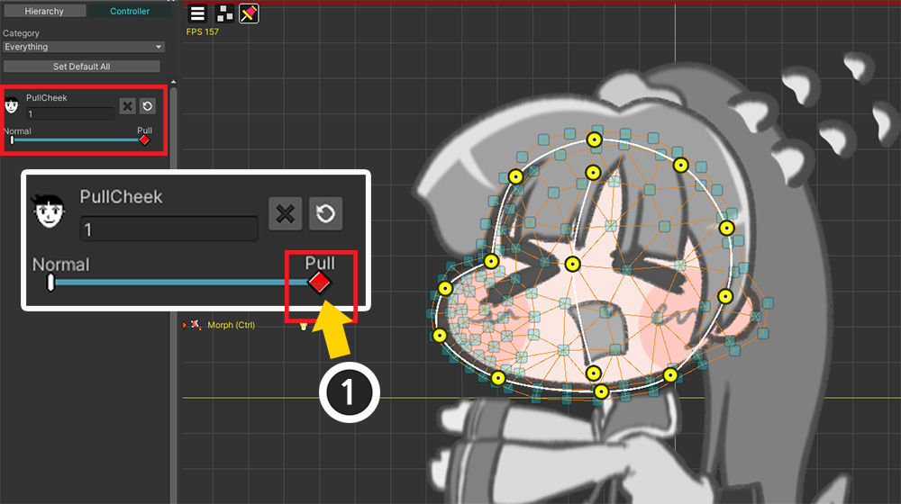
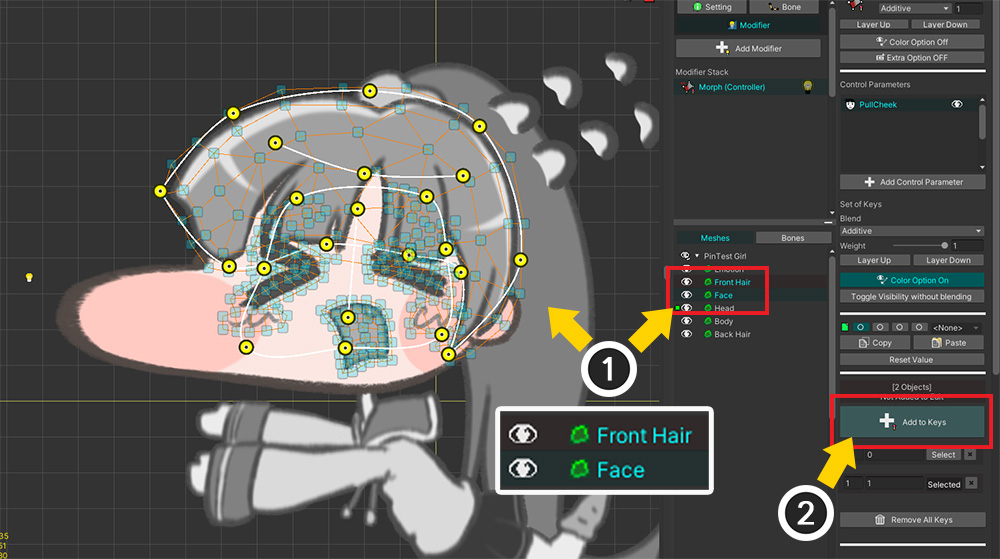
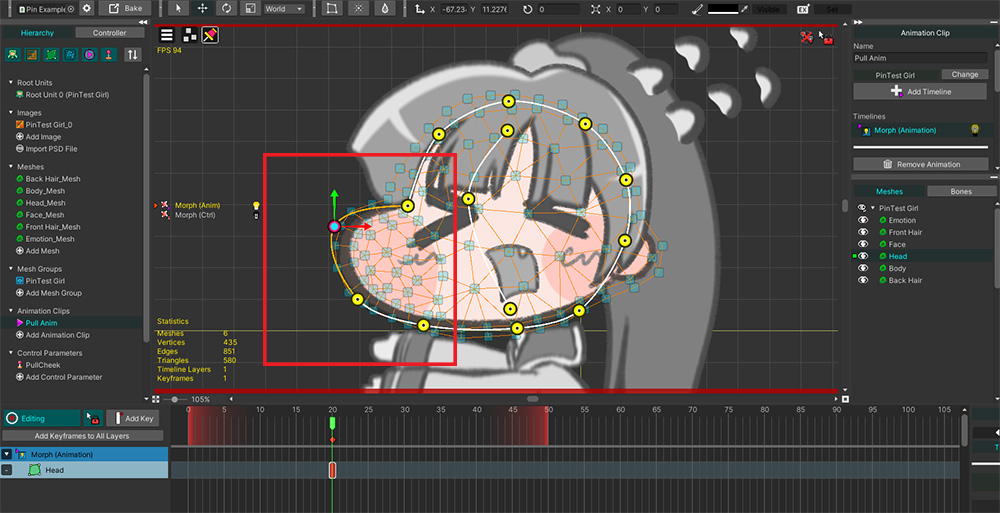
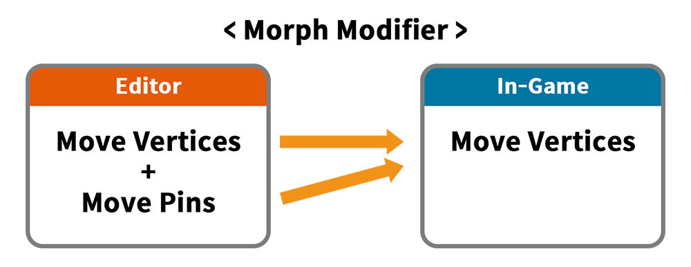
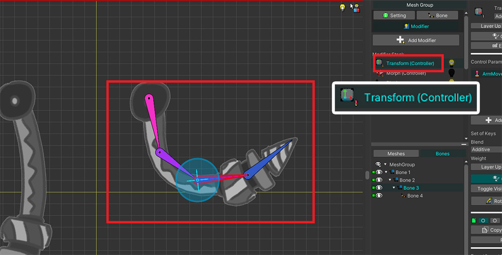

AnyPortrait > マニュアル > 「Morph」モディファイヤでの「ピン」の使用
「Morph」モディファイヤでの「ピン」の使用
1.4.0
「AnyPortrait v1.4.0」に追加された「ピン（Pin）」ツールを使用すると、頂点モーフィング操作をはるかに効率的にすることができます。
このページでは、「Morphモディファイア」で「ピン」を利用する過程について説明します。
メッシュにピンを追加する方法については、以下のマニュアルを参照してください。
- ピンの追加

説明のためにかわいいキャラクターを用意してみました。
このキャラクターの頬をそっと引っ張る姿をピンを利用して作ってみましょう。

「Morph モディファイア」でピンを動かすには、メッシュにピンが追加されている必要があります。
(1) 「メッシュ」を選択します。
(2) 「Pin」メニューを選択します。
(3) 「ピン」を画像に合わせて追加して接続します。

同様に、頂点モーフィングの対象となるメッシュにピンを追加します。

モディファイアを制御するために、上記のように制御パラメータを生成しました。

(1) 「メッシュグループ」を選択します。
(2) 「Modifier」タブの「Add Modifier」ボタンを押します。
(3) 「Morph (Controller) 」モディファイアを選択し、 (4) 「Select」ボタンを押します。

(1) 追加した「Morphモディファイア」を選択します。
(2) メッシュを選択します。
(3) 画面左の「Controller」タブで、「制御パラメータUI」のキーを追加するボタンを押します。

「編集モード」をオンにしてメッシュを選択しても、デフォルトではピンは表示されません。
(1) 編集対象を頂点ではなく「ピン」に変更します。 （ショートカット： Alt+T ）
(2) 選択したメッシュのピンがワークスペースに表示されます。

制御パラメータによってキャラクターの頬が引かれるようにしましょう。
(1) 制御パラメータ UI のスライダを動かして新しいキーを作成します。

ピンを動かして上記のように形を変えることができます。
メッシュには多くの頂点がありますが、少数のピンを利用することで作業時間を大幅に短縮できます。

頂点編集と同様に、「FFD、Soft Selection、Blur」ツールを使用してピンを編集することもできます。

また、複数のメッシュのピンを同時に編集することも可能です。
(1) 他のメッシュを選択し、 (2) モディファイアに登録します。

2つのメッシュのピンを同時に編集すると、作業をより効率的にすることができます。

もちろん、この状態で頂点を使って細かく編集できます。
ピンを使っておおよその形を作り、頂点を使って仕上げるのが良い方法でしょう。
(1) 編集対象を「頂点」に変更します。
(2) 頂点を選択して移動してメッシュの形状を変形します。

アニメーション用モディファイアでもピンを利用できます。
(1) 「Add Modifier」ボタンを押し、 (2) 「Morph（Animation）」モディファイアを追加します。

(1) 新しいアニメーションを追加します。
(2) 追加した「Morph（Animation）」モディファイアをタイムラインとして登録します。
(3) メッシュをタイムラインレイヤーとして登録します。
(4) 「編集モード」をオンにしてキーフレームを追加します。
(5) 編集対象を「ピン」に切り替えます。

上記と同じようにアニメーションでもピンを使ってメッシュを編集してみてください！
Morphモディファイアでピンが動作する方法
さて、ピンはまるでボーンを使った「リギング（Rigging）」と同じように動作するようです。
しかし、ボーンがTransformモディファイアによって編集されるのに対し、ピンはMorphモディファイアの対象となる点で何らかの違いがあることを 予想できます。
実際、ピンによる頂点の動きを計算することは、一般的な頂点モーフィングやリギングに比べてはるかに複雑です。
したがって、この便利な機能をゲーム中に高いパフォーマンスで使用するためには、リギングとは異なる方法でデータを保存して活用する必要がありました。

ピンデータがBakeの過程でどのように変化するかについての図である。
「エディタでのMorphモディファイア」は、「頂点」と「ピン」の両方のデータを取り、メッシュの形状を計算します。
ただし、Bakeを行うと、ピンデータは頂点データにまとめられます。
このような演算を通じて、「ゲームでのMorphモディファイア」では複雑なピン演算はせず、ただ「頂点」演算だけ素早く実行して高い性能を維持できるのです。
「ピンによる頂点の動き」をあらかじめ計算して「Bake」することは最適化に役立ちますが、これにより「補間演算」に変化が生じることになります。

2つのキーのピンの動きはすぐに補間されません。
Bakeをするとピンは存在しないため、補間演算の対象にならないからです。
まず、各キーのピンによる頂点の位置を最初に計算します。
そして、変換された頂点位置データ間の補間が計算されます。

異なる方法で同じ形のメッシュが同様に動くようにして、その違いを比較しましょう。


左のメッシュには、ピンとMorphモディファイアを使用して動くテクニックを適用しました。
一方、右メッシュにはボーンと Transform/Rigging モディファイアを用いて動く技法を適用しました。

さまざまな手法で作成しましたが、制御パラメータの2つのキーの各メッシュの外観はほぼ同じようです。

しかし、制御パラメータを動かしてみると大きな違いを確認できます。
ボーンによって動く右側のメッシュは、適切に回転して動くのを見ることができます。
ピンで動く左のメッシュは、移動中に非常に奇妙な形をしていることがわかります。
「ボーンの回転」のような情報がなく、「直線補間」しかしないため、上記のような結果が現れるのです。
ピンとボーンは似ているように見えても結果に大きな違いがあるため、使用目的に応じて異なる方法で使用する必要があります。
したがって、頂点モーフィングの補助ツールとしてピンを利用することが最も推奨されます。
他のモディファイアをオンにして作業することはできません！
「ピンツール」は頂点とは異なり、「Riggingモディファイア」の影響を受けません。
内部テストの結果、「ピン」編集状態で「Transformモディファイア」をオンにした状態でユーザーが作業をすると混乱を感じるという意見がありました。
したがってピン編集状態では例外的に編集モードで他のモディファイアを動作するオプション（関連ページ）がオフになるように実装をした状態です。
この部分に関してフィードバックをいただき、ユーザビリティの改善にご参考いたします。